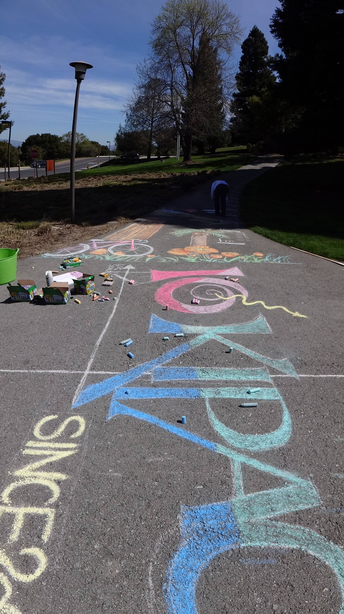

Outreach
I enjoy telling the public about science and especially cosmology -- it's such fascinating and beautiful things it makes people happy, I think. Here are some of the teaching and outreach activiity I've been involved in. (Also see some info from my old website.)
DarkBites: I worked on making a series of comic illustrations of science facts, run from the DES Education and Public Outreach programe. These drawings were later used in many outreach events including.
Universe in Chalk: This is a program teaching kids (and adults) about the scales of the Universe and the objects within it. Many different versions of it were carried out during the time I was at KIPAC. I loved drawing on the sidewalk with chalk!
Volunteer at the Adler Planetarium Astronomy Conversation program in the Space Visualization Lab.
Work as a SLAC/KIPAC tour guide for 2 years.
Image: for KIPAC 10-year open house, artwork on the sidewalk at SLAC for the "Universe in Chalk" activity.